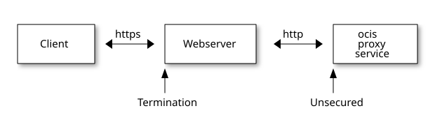
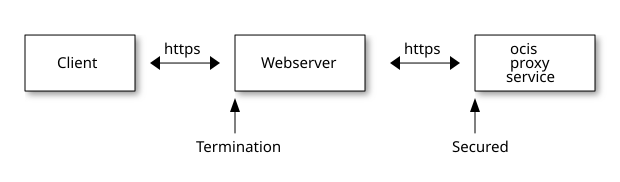
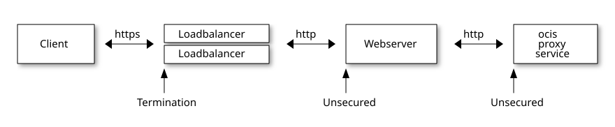

Proxy Service Configuration
Introduction
The proxy service is an API-Gateway for the ownCloud Infinite Scale microservices. Every HTTP request goes through this service. Authentication, logging and other preprocessing of requests also happens here. Mechanisms like request rate limiting or intrusion prevention are not included in the proxy service and must be set up in front of an external reverse proxy.
See the Developer Documentation for details if you want to write your own extensions and need to change or add routes to endpoints.
Authentication
The following request authentication schemes are implemented:
-
Basic Auth (Only use in development, never in production setups!)
-
OpenID Connect
-
Signed URL
-
Public Share Token
Automatic Assignments
Some assignments can be automated using yaml files, environment variables and/or OIDC claims.
Automatic User and Group Provisioning
When using an external OpenID Connect IDP, the proxy can be configured to automatically provision users upon their first login.
Prerequisites
A number of prerequisites must be met for automatic user provisioning to work:
-
Infinite Scale must be configured to use an external OpenID Connect IDP.
-
The
graphservice must be configured to allow updating users and groups (GRAPH_LDAP_SERVER_WRITE_ENABLED). -
One of the claim values returned by the IDP as part of the userinfo response or the access token must be unique and stable for the user. I.e. the value must not change for the whole lifetime of the user. This claim is configured via the
PROXY_USER_OIDC_CLAIMenvironment variable (see below). A natural choice would e.g. be thesubclaim which is guaranteed to be unique and stable per IDP. If a claim likeemailorpreferred_usernameis used, you have to ensure that the user’s email address or username never changes.
Configuration
To enable automatic user provisioning, the following environment variables must be set for the proxy service:
-
PROXY_AUTOPROVISION_ACCOUNTS
Set totrueto enable automatic user provisioning. -
PROXY_AUTOPROVISION_CLAIM_USERNAME
The name of an OIDC claim whose value should be used as the username for the auto-provisioned user in ownCloud Infinite Scale. Defaults topreferred_username. Can also be set to e.g.subto guarantee a unique and stable username. -
PROXY_AUTOPROVISION_CLAIM_EMAIL
The name of an OIDC claim whose value should be used for themailattribute of the auto-provisioned user in ownCloud Infinite Scale. Defaults toemail. -
PROXY_AUTOPROVISION_CLAIM_DISPLAYNAME
The name of an OIDC claim whose value should be used for thedisplaynameattribute of the auto-provisioned user in ownCloud Infinite Scale. Defaults toname. -
PROXY_AUTOPROVISION_CLAIM_GROUPS
The name of an OIDC claim whose value should be used to maintain a user’s group membership. The claim value should contain a list of group names the user should be a member of. Defaults togroups. -
PROXY_USER_OIDC_CLAIM
When resolving an authenticated OIDC user, the value of this claim is used to lookup the user in the users service. For auto provisioning setups this usually is the same claims as set viaPROXY_AUTOPROVISION_CLAIM_USERNAME. -
PROXY_USER_CS3_CLAIM
This is the name of the user attribute in ocis that is used to lookup the user by the value of thePROXY_USER_OIDC_CLAIM. For auto provisioning setups this usually needs to be set tousername.
How it Works
When a user logs into ownCloud Infinite Scale for the first time, the proxy checks if that user already exists. This is done by querying the users service for users, where the attribute set in PROXY_USER_CS3_CLAIM matches the value of the OIDC claim configured in PROXY_USER_OIDC_CLAIM.
If the user does not exist, the proxy will create a new user via the graph service using the claim values configured in
PROXY_AUTOPROVISION_CLAIM_USERNAME, PROXY_AUTOPROVISION_CLAIM_EMAIL and PROXY_AUTOPROVISION_CLAIM_DISPLAYNAME.
If the user does already exist, the proxy checks if the displayname has changed and updates that accordingly via graph service.
Unless the claim configured via PROXY_AUTOPROVISION_CLAIM_EMAIL is the same as the one set via PROXY_USER_OIDC_CLAIM the proxy will also check if the email address has changed and update that as well.
Next, the proxy will check if the user is a member of the groups configured in PROXY_AUTOPROVISION_CLAIM_GROUPS. It will add the user to the groups listed via the OIDC claim that holds the groups defined in the envvar and removes it from
all other groups that he is currently a member of. Groups that do not exist in the external IDP yet will be created. Note: This can be a somewhat costly operation, especially if the user is a member of a large number of groups. If the group memberships of a user are changed in the IDP after the first login, it can take up to 5 minutes until the changes are reflected in Infinite Scale.
Claims
Claim Updates
OpenID Connect (OIDC) scopes are used by an application during authentication to authorize access to a user’s detail, like name, email or picture information. A scope can also contain among other things groups, roles, and permissions data. Each scope returns a set of attributes, which are called claims. The scopes an application requests, depends on which attributes the application needs. Once the user authorizes the requested scopes, the claims are returned in a token.
These issued JWT tokens are immutable and integrity-protected. Which means, any change in the source requires issuing a new token containing updated claims. On the other hand side, there is no active synchronisation process between the identity provider (IDP) who issues the token and Infinite Scale. The earliest possible time that Infinite Scale will notice changes is, when the current access token has expired and a new access token is issued by the IDP, or the user logs out and relogs in.
|
Claim Checks and Step-up Authentication
Infinite Scale provides access control via the OpenID Connect (OIDC) "Authentication Class Reference" (ACR) claim. This can be used to enforce step-up authentication on specific routes. For instance, if a user logs in with basic authentication, they may need a higher level to access a sensitive route. If the user has not authenticated at the required level, access to the route will be denied.
This is configurable via environment variables, such as:
OCIS_MFA_ENABLED: true
OCIS_MFA_AUTH_LEVEL_NAME: advancedThis feature is disabled by default and requires an external Identity Provider (IDP) that supports step-up authentication and the ACR claim. Examples of such IDPs include Keycloak.
If an authenticated user attempts to access a protected route without two-factor authentication (2FA), the server will respond with a 403 Forbidden error and an X-OCIS-MFA-Required header.
Impacts
For shares or space memberships based on groups, a renamed or deleted group will impact accessing the resource:
-
There is no user notification about the inability accessing the resource.
-
The user will only experience rejected access.
-
This also applies for connected apps like the Desktop, iOS or Android app!
To give access for rejected users on a resource, one with rights to share must update the group information.
Quota Assignments
It is possible to automatically assign a specific quota to new users depending on their role. To do this, you need to configure a mapping between roles defined by their ID and the quota in bytes. The assignment can only be done via a yaml configuration and not via environment variables. See the following proxy.yaml config snippet for a configuration example.
role_quotas:
<role ID1>: <quota1>
<role ID2>: <quota2>Role Assignments
When users log in, they automatically get a role assigned. The automatic role assignment can be configured in different ways. The PROXY_ROLE_ASSIGNMENT_DRIVER environment variable (or the driver setting in the role_assignment section of the configuration file) selects which mechanism to use for the automatic role assignment.
-
When
PROXY_ROLE_ASSIGNMENT_DRIVERis set todefault, all users that do not have a role assigned at the time of their first login will get the role 'user' assigned. (This is also the default behavior ifPROXY_ROLE_ASSIGNMENT_DRIVERis unset. -
When
PROXY_ROLE_ASSIGNMENT_DRIVERis set tooidc, the role assignment for a user will happen based on the values of an OpenID Connect Claim of that user. The name of the OpenID Connect Claim to be used for the role assignment can be configured via thePROXY_ROLE_ASSIGNMENT_OIDC_CLAIMenvironment variable. It is also possible to define a mapping of claim values to role names defined in ownCloud Infinite Scale via ayamlconfiguration. See the followingproxy.yamlsnippet for an example.role_assignment: driver: oidc oidc_role_mapper: role_claim: ocisRoles role_mapping: - role_name: admin claim_value: myAdminRole - role_name: spaceadmin claim_value: mySpaceAdminRole - role_name: user claim_value: myUserRole - role_name: guest claim_value: myGuestRoleThis would assign the role
adminto users with the valuemyAdminRolein the claimocisRoles. The roleuserto users with the valuesmyUserRolein the claimocisRolesand so on. -
Wildcard or Regex Claim Matching
The
claim_valuesupports exact strings and regular expressions to map multiple claim values to a single role. Regexes are matched against the entire claim value (implicit start/end anchors).Examples:
role_assignment: driver: oidc oidc_role_mapper: role_claim: ocisRoles role_mapping: # exact match - role_name: user claim_value: ocisUser # regex: match any value starting with "ocis-user-" - role_name: user-light claim_value: ocis-user-.* # regex: single alphanumeric suffix - role_name: guest claim_value: ocis-guest-[a-zA-Z0-9]Note: Regex patterns are treated as full matches. Typically you don’t need
^or$. If aclaim_valueis an invalid regex, it only matches claim values that are exactly equal; otherwise it’s ignored. Ordering still applies, and the first matching mapping wins.
Claim values that are not mapped to a specific Infinite Scale role will be ignored.
|
An Infinite Scale user can only have a single role assigned. If the configured If a user’s claim values don’t match any of the configured role mappings, an error will be logged and the user will not be able to log in. |
The default role_claim (or PROXY_ROLE_ASSIGNMENT_OIDC_CLAIM) is roles. The default role_mapping is:
- role_name: admin
claim_value: ocisAdmin
- role_name: spaceadmin
claim_value: ocisSpaceAdmin
- role_name: user
claim_value: ocisUser
- role_name: guest
claim_value: ocisGuestSpace Management Through OIDC Claims
|
If required, users can be assigned or removed to Spaces via OIDC claims. This makes central user/Space management easy. Managed via environment variables, administrators can define the claim to use, a regex ruleset to extract the Space IDs and roles from a claim for provisioning. It is also possible to manually map OIDC roles to Infinite Scale Space roles. Note that assigning works both ways. Users can be added to Spaces as well as removed. Users must log out and log in again to activate any changes. The relevant environment variables that manage Spaces through OIDC claims follow the OCIS_CLAIM_MANAGED_SPACES_xxx pattern. See Listing Space IDs for how to obtain the ID of a Space.
|
The following rules apply if enabled:
(1) … These incidents cannot be logged due to the fact that claims can have a variety of layouts and may also contain data unrelated to Infinite Scale. |
- Example Setup
-
The following is a simple setup of what space management through OIDC claims can look like. The way how a claim is setup depends on the IDP used. It is important to understand, that the claim setup and the corresponding regex must match.
A claim defined asocis-spacescontaining two entries:"ocis-spaces": [ "spaceid=b622d44a-1747-4eda-8905-89f3605d5849:role=member", "spaceid=129cb9b6-c579-41b5-9316-93c6543484e5:role=spectator", ]The environment variables to extract the data from the above claim look like this:
Environment variable definitionOCIS_CLAIM_MANAGED_SPACES_ENABLED=true OCIS_CLAIM_MANAGED_SPACES_CLAIMNAME=ocis-spaces OCIS_CLAIM_MANAGED_SPACES_REGEXP="spaceid=([a-zA-Z0-9-]+):role=(.*)", OCIS_CLAIM_MANAGED_SPACES_MAPPING="member:editor,spectator:viewer"- Result
-
This would add a user, to which this claim is assigned, to the following Spaces with defined roles:
-
b622d44a-1747-4eda-8905-89f3605d5849with the roleeditorand to -
129cb9b6-c579-41b5-9316-93c6543484e5with the roleviewer.
Note that
OCIS_CLAIM_MANAGED_SPACES_MAPPINGcan be omitted if roles in the claim already match roles defined by Infinite Scale. -
Multi Instance Infinite Scale
Infinite Scale can be used to configure multi-instance environments. This allows multiple instances to connect to the same external IDP. Without this configuration, only one-to-one setups are possible. The environment variables to configure such a setup start with OCIS_MULTI_INSTANCE_xxx. Since this setup requires in-depth knowledge of the environment, only a configuration example can be provided, which can be found at: Multi Instance Deployment Example.
Recommendations for Production Deployments
-
The proxy service is the only service communicating to the outside and therefore needs the usual protection against DDOS, Slow Loris or other attack vectors. All other services are not exposed to the outside, but also need protective measures when it comes to distributed setups like when using container orchestration over various physical servers.
-
In a production deployment, you want to have basic authentication (
PROXY_ENABLE_BASIC_AUTH) disabled which is the default state. You should also set up a firewall to only allow requests to the proxy service or the reverse proxy if you have one. Requests to the other services should be blocked by the firewall.
Content Security Policy
- What is a Content Security Policy (CSP) and why is it used in Infinite Scale
-
A Content Security Policy (CSP) is a feature that helps to prevent or minimize the risk of certain types of security threats. It consists of a series of instructions from a website to a browser, which instruct the browser to place restrictions on the things that the code comprising site is allowed to do. It is mainly used as a defense against cross-site scripting (XSS) attacks, in which an attacker is able to inject malicious code into the victim’s site and includes defending against clickjacking, and helping to ensure that a site’s pages will be loaded over HTTPS.
For Infinite Scale, external resources like an IDP (e.g. Keycloak) or when using web office documents or web apps, require defining a CSP. If not defined, the referenced services will not work.
To create a Content Security Policy (CSP), you need to create a yaml file containing the CSP definitions. To activate the settings, reference the file as value in the PROXY_CSP_CONFIG_FILE_LOCATION environment variable. For each change, a restart of the Infinite Scale deployment or the proxy service is required.
A working example for a CSP can be found in a sub path of the config directory of the ocis_full deployment example which is the base for our Local Production Setup and the Deployment on Hetzner.
See the Content Security Policy (CSP) Quick Reference Guide for a description of directives.
Strict Transport Security Header
Infinite Scale cannot always determine whether the entire communication chain between itself and the client is secure. Consider the following scenarios:



As you can see in Figure 2, the entire chain is secured by HTTPS, and the headers will be sent accordingly. The other figures illustrate that, although the client has a secure connection, the subsequent connection is insecure. Because the Infinite Scale proxy service can only detect his connection, it sends back headers for an insecure connection.
To mitigate this issue, set the environment variable PROXY_FORCE_STRICT_TRANSPORT_SECURITY to true. This forces the sending of Strict-Transport-Security headers on all responses.
Presigned Urls
Important, also see section caching above.
To authenticate presigned URLs, the proxy service needs to read the signing keys from a store that is populated by the ocs service.
The following stores can be configured via the OCS_PRESIGNEDURL_SIGNING_KEYS_STORE environment variable:
-
nats-js-kv
Stores data using key-value-store feature of nats jetstream. -
redis-sentinel
Stores data in a configured Redis Sentinel cluster.
|
Store specific notes:
-
When using
redis-sentinel
The Redis master to use is configured via e.g.OCS_PRESIGNEDURL_SIGNING_KEYS_STORE_NODESin the form of<sentinel-host>:<sentinel-port>/<redis-master>like10.10.0.200:26379/mymaster. -
When using
nats-js-kv
It is recommended to setPROXY_PRESIGNEDURL_SIGNING_KEYS_STORE_NODESto the same value asOCS_PRESIGNEDURL_SIGNING_KEYS_STORE_NODES. That way theproxyservice uses the same nats instance as the ocs service. -
When using
ocisstoreservice
TheOCS_PRESIGNEDURL_SIGNING_KEYS_STORE_NODESmust be set to the service namecom.owncloud.api.store. It does not support TTL and stores the presigning keys indefinitely. Also, the store service needs to be started.
Special Settings
When using the Infinite Scale IDP service instead of an external IDP:
-
Use the environment variable OCIS_URL to define how Infinite Scale can be accessed; mandatory is the use of
httpsas protocol for the URL. -
If no reverse proxy is set up, the
PROXY_TLSenvironment variable must be set totruebecause the embeddedlibreConnectshipped with the IDP service has a hard check if the connection is on TLS and uses the HTTPS protocol. If this mismatches, an error will be logged and no connection from the client can be established. -
PROXY_TLScan be set tofalseif a reverse proxy is used and the https connection is terminated at the reverse proxy. When setting tofalse, the communication between the reverse proxy and Infinite Scale is not secured. If set totrue, you must provide certificates.
Metrics
For details on monitoring see the Metrics for Prometheus documentation.
Caching
Important, also see section Presigned Urls below.
The proxy service can use a configured store via the global OCIS_CACHE_STORE environment variable.
Note that for each global environment variable, an independent service-based one might be available additionally. For precedences see Environment Variable Notes. Check the configuration section below. Supported stores are:
| Store Type | Description |
|---|---|
|
Basic in-memory store. Will not survive a restart. |
|
Stores data using key-value-store feature of NATS JetStream. |
|
Stores data in a configured Redis Sentinel cluster. |
|
Stores nothing. Useful for testing. Not recommended in production environments. |
The proxy service can only be scaled if not using the memory store and the stores are configured identically over all instances!
|
| If you have used one of the deprecated stores of a former version, you should reconfigure to use one of the supported ones as the deprecated stores will be removed in a later version. |
- Store specific notes
-
-
When using
redis-sentinel:
The Redis master to use is configured via e.g.OCIS_CACHE_STORE_NODESin the form of<sentinel-host>:<sentinel-port>/<redis-master>like10.10.0.200:26379/mymaster. -
When using
nats-js-kv:-
It is recommended to set
OCIS_CACHE_STORE_NODESto the same value asOCIS_EVENTS_ENDPOINT. That way the cache uses the same nats instance as the event bus. See the Event Bus Configuration for more details. -
Authentication can be added, if configured, via
OCIS_CACHE_AUTH_USERNAMEandOCIS_CACHE_AUTH_PASSWORD. -
It is possible to set
OCIS_CACHE_DISABLE_PERSISTENCEto instruct nats to not persist cache data on disc.
-
-
Event Bus Configuration
The Infinite Scale event bus can be configured by a set of environment variables.
|
Note that for each global environment variable, a service-based one might be available additionally. For precedences see Environment Variable Notes. Check the configuration section below.
Without the aim of completeness, see the list of environment variables to configure the event bus:
| Envvar | Description |
|---|---|
|
The address of the event system. |
|
The clusterID of the event system. Mandatory when using NATS as event system. |
|
Enable TLS for the connection to the events broker. |
|
Whether to verify the server TLS certificates. |
|
The username to authenticate with the events broker. |
|
The password to authenticate with the events broker. |
Configuration
Environment Variables
The proxy service is configured via the following environment variables. Read the Environment Variable Types documentation for important details. Column IV shows with which release the environment variable has been introduced.
| Name | IV | Type | Default Value | Description |
|---|---|---|---|---|
|
pre5.0 |
bool |
false |
Activates tracing. |
|
pre5.0 |
string |
|
The type of tracing. Defaults to '', which is the same as 'jaeger'. Allowed tracing types are 'jaeger', 'otlp' and '' as of now. |
|
pre5.0 |
string |
|
The endpoint of the tracing agent. |
|
pre5.0 |
string |
|
The HTTP endpoint for sending spans directly to a collector, i.e. http://jaeger-collector:14268/api/traces. Only used if the tracing endpoint is unset. |
|
pre5.0 |
string |
|
The log level. Valid values are: 'panic', 'fatal', 'error', 'warn', 'info', 'debug', 'trace'. |
|
pre5.0 |
bool |
false |
Activates pretty log output. |
|
pre5.0 |
bool |
false |
Activates colorized log output. |
|
pre5.0 |
string |
|
The path to the log file. Activates logging to this file if set. |
|
pre5.0 |
string |
127.0.0.1:9205 |
Bind address of the debug server, where metrics, health, config and debug endpoints will be exposed. |
|
pre5.0 |
string |
|
Token to secure the metrics endpoint. |
|
pre5.0 |
bool |
false |
Enables pprof, which can be used for profiling. |
|
pre5.0 |
bool |
false |
Enables zpages, which can be used for collecting and viewing in-memory traces. |
|
pre5.0 |
string |
0.0.0.0:9200 |
The bind address of the HTTP service. |
|
pre5.0 |
string |
/ |
Subdirectory that serves as the root for this HTTP service. |
|
pre5.0 |
string |
/var/lib/ocis/proxy/server.crt |
Path/File name of the TLS server certificate (in PEM format) for the external http services. If not defined, the root directory derives from $OCIS_BASE_DATA_PATH/proxy. |
|
pre5.0 |
string |
/var/lib/ocis/proxy/server.key |
Path/File name for the TLS certificate key (in PEM format) for the server certificate to use for the external http services. If not defined, the root directory derives from $OCIS_BASE_DATA_PATH/proxy. |
|
pre5.0 |
bool |
true |
Enable/Disable HTTPS for external HTTP services. Must be set to 'true' if the built-in IDP service an no reverse proxy is used. See the text description for details. |
|
8.0.0 |
bool |
false |
Force emission of the Strict-Transport-Security header on all responses, including plain HTTP requests. See also: PROXY_TLS |
|
pre5.0 |
string |
com.owncloud.api.gateway |
The CS3 gateway endpoint. |
|
pre5.0 |
string |
|
TLS mode for grpc connection to the go-micro based grpc services. Possible values are 'off', 'insecure' and 'on'. 'off': disables transport security for the clients. 'insecure' allows using transport security, but disables certificate verification (to be used with the autogenerated self-signed certificates). 'on' enables transport security, including server certificate verification. |
|
pre5.0 |
string |
|
Path/File name for the root CA certificate (in PEM format) used to validate TLS server certificates of the go-micro based grpc services. |
|
pre5.0 |
string |
https://localhost:9200 |
URL of the OIDC issuer. It defaults to URL of the builtin IDP. |
|
pre5.0 |
bool |
false |
Disable TLS certificate validation for connections to the IDP. Note that this is not recommended for production environments. |
|
pre5.0 |
string |
jwt |
Sets how OIDC access tokens should be verified. Possible values are 'none' and 'jwt'. When using 'none', no special validation apart from using it for accessing the IPD’s userinfo endpoint will be done. When using 'jwt', it tries to parse the access token as a jwt token and verifies the signature using the keys published on the IDP’s 'jwks_uri'. |
|
pre5.0 |
bool |
false |
Do not look up user claims at the userinfo endpoint and directly read them from the access token. Incompatible with 'PROXY_OIDC_ACCESS_TOKEN_VERIFY_METHOD=none'. |
|
pre5.0 |
string |
memory |
The type of the cache store. Supported values are: 'memory', 'redis-sentinel', 'nats-js-kv', 'noop'. See the text description for details. |
|
pre5.0 |
[]string |
[127.0.0.1:9233] |
A list of nodes to access the configured store. This has no effect when 'memory' store is configured. Note that the behaviour how nodes are used is dependent on the library of the configured store. See the Environment Variable Types description for more details. |
|
pre5.0 |
string |
cache-userinfo |
The database name the configured store should use. |
|
pre5.0 |
string |
|
The database table the store should use. |
|
pre5.0 |
Duration |
10s |
Default time to live for user info in the user info cache. Only applied when access tokens has no expiration. See the Environment Variable Types description for more details. |
|
pre5.0 |
bool |
false |
Disables persistence of the cache. Only applies when store type 'nats-js-kv' is configured. Defaults to false. |
|
5.0 |
string |
|
The username to authenticate with the cache. Only applies when store type 'nats-js-kv' is configured. |
|
5.0 |
string |
|
The password to authenticate with the cache. Only applies when store type 'nats-js-kv' is configured. |
|
pre5.0 |
uint64 |
60 |
The interval for refreshing the JWKS (JSON Web Key Set) in minutes in the background via a new HTTP request to the IDP. |
|
pre5.0 |
uint64 |
10 |
The timeout in seconds for an outgoing JWKS request. |
|
pre5.0 |
uint64 |
60 |
Limits the rate in seconds at which refresh requests are performed for unknown keys. This is used to prevent malicious clients from imposing high network load on the IDP via ocis. |
|
pre5.0 |
bool |
true |
If set to 'true', the JWKS refresh request will occur every time an unknown KEY ID (KID) is seen. Always set a 'refresh_limit' when enabling this. |
|
pre5.0 |
bool |
false |
Enables rewriting the /.well-known/openid-configuration to the configured OIDC issuer. Needed by the Desktop Client, Android Client and iOS Client to discover the OIDC provider. |
|
5.0 |
string |
|
The ID of the service account the service should use. See the 'auth-service' service description for more details. |
|
5.0 |
string |
|
The service account secret. |
|
pre5.0 |
string |
default |
The mechanism that should be used to assign roles to user upon login. Supported values: 'default' or 'oidc'. 'default' will assign the role 'user' to users which don’t have a role assigned at the time they login. 'oidc' will assign the role based on the value of a claim (configured via PROXY_ROLE_ASSIGNMENT_OIDC_CLAIM) from the users OIDC claims. |
|
pre5.0 |
string |
roles |
The OIDC claim used to create the users role assignment. |
|
pre5.0 |
bool |
true |
Allow OCS to get a signing key to sign requests. |
|
5.0 |
string |
nats-js-kv |
The type of the signing key store. Supported values are: 'redis-sentinel', 'nats-js-kv' and 'ocisstoreservice' (deprecated). See the text description for details. |
|
5.0 |
[]string |
[127.0.0.1:9233] |
A list of nodes to access the configured store. Note that the behaviour how nodes are used is dependent on the library of the configured store. See the Environment Variable Types description for more details. |
|
5.0 |
Duration |
12h0m0s |
Default time to live for signing keys. See the Environment Variable Types description for more details. |
|
5.0 |
bool |
true |
Disables persistence of the store. Only applies when store type 'nats-js-kv' is configured. Defaults to true. |
|
5.0 |
string |
|
The username to authenticate with the store. Only applies when store type 'nats-js-kv' is configured. |
|
5.0 |
string |
|
The password to authenticate with the store. Only applies when store type 'nats-js-kv' is configured. |
|
pre5.0 |
string |
cs3 |
Account backend the PROXY service should use. Currently only 'cs3' is possible here. |
|
pre5.0 |
string |
preferred_username |
The name of an OpenID Connect claim that is used for resolving users with the account backend. The value of the claim must hold a per user unique, stable and non re-assignable identifier. The availability of claims depends on your Identity Provider. There are common claims available for most Identity providers like 'email' or 'preferred_username' but you can also add your own claim. |
|
pre5.0 |
string |
username |
The name of a CS3 user attribute (claim) that should be mapped to the 'user_oidc_claim'. Supported values are 'username', 'mail' and 'userid'. |
|
pre5.0 |
string |
|
Machine auth API key used to validate internal requests necessary to access resources from other services. |
|
pre5.0 |
bool |
false |
Set this to 'true' to automatically provision users that do not yet exist in the users service on-demand upon first sign-in. To use this a write-enabled libregraph user backend needs to be setup an running. |
|
6.0.0 |
string |
preferred_username |
The name of the OIDC claim that holds the username. |
|
6.0.0 |
string |
The name of the OIDC claim that holds the email. |
|
|
6.0.0 |
string |
name |
The name of the OIDC claim that holds the display name. |
|
6.1.0 |
string |
groups |
The name of the OIDC claim that holds the groups. |
|
pre5.0 |
bool |
false |
Set this to true to enable 'basic authentication' (username/password). |
|
pre5.0 |
bool |
false |
Disable TLS certificate validation for all HTTP backend connections. |
|
pre5.0 |
string |
|
Path/File for the root CA certificate used to validate the server’s TLS certificate for https enabled backend services. |
|
7.0.0 |
bool |
false |
Allow app authentication. This can be used to authenticate 3rd party applications. Note that auth-app service must be running for this feature to work. |
|
pre5.0 |
string |
|
Defines the 'Complete Rules' variable defined in the rego rule set this step uses for its evaluation. Rules default to deny if the variable was not found. |
|
6.0.0 |
string |
|
The location of the CSP configuration file. |
|
7.0.0 |
string |
127.0.0.1:9233 |
The address of the event system. The event system is the message queuing service. It is used as message broker for the microservice architecture. Set to a empty string to disable emitting events. |
|
7.0.0 |
string |
ocis-cluster |
The clusterID of the event system. The event system is the message queuing service. It is used as message broker for the microservice architecture. |
|
7.0.0 |
bool |
false |
Whether to verify the server TLS certificates. |
|
7.0.0 |
string |
|
The root CA certificate used to validate the server’s TLS certificate. If provided PROXY_EVENTS_TLS_INSECURE will be seen as false. |
|
7.0.0 |
bool |
false |
Enable TLS for the connection to the events broker. The events broker is the ocis service which receives and delivers events between the services. |
|
7.0.0 |
string |
|
The username to authenticate with the events broker. The events broker is the ocis service which receives and delivers events between the services. |
|
7.0.0 |
string |
|
The password to authenticate with the events broker. The events broker is the ocis service which receives and delivers events between the services. |
|
7.2.0 |
bool |
false |
Enables Space management through OIDC claims. See the text description for more details. |
|
7.2.0 |
string |
|
The name of the claim used to manage Spaces. |
|
7.2.0 |
string |
|
The regular expression that extracts Space IDs and roles from a claim. |
|
7.2.0 |
[]string |
[] |
(Optional) Mapping of OIDC roles to ocis Space roles. Example: 'oidcroleA:viewer,oidcroleB:manager' |
|
Balch |
bool |
false |
Enable MFA enforcement. If enabled users need to complete MFA before they can access specific paths |
|
7.3.0 |
[]string |
[advanced] |
This authentication level name indicates that multi-factor authentication was performed. The name must match the ACR claim in the access token received. Note: If multiple names are required, use a comma-separated list. The front-end service will use the first name in the list when requesting multi-factor authentication (MFA). |
|
8.0.0 |
bool |
false |
Enable multiple instances of Infinite Scale. |
|
8.0.0 |
string |
|
The unique id of this instance |
|
NEXT |
string |
|
The master ID that grants access to all instances. Users with this ID in their memberOf or guestOf claims can access any instance. Leave empty to disable. |
|
8.0.0 |
string |
|
The claim name for the 'memberOf' property |
|
8.0.0 |
string |
|
The claim name for the 'guestOf' property |
|
8.0.0 |
string |
|
The role that should be assigned to a guest user |
YAML Example
-
Note the file shown below must be renamed and placed in the correct folder according to the Configuration File Naming conventions to be effective.
-
See the Notes for Environment Variables if you want to use environment variables in the yaml file.
# Autogenerated
# Filename: proxy-config-example.yaml
tracing:
enabled: false
type: ""
endpoint: ""
collector: ""
log:
level: ""
pretty: false
color: false
file: ""
debug:
addr: 127.0.0.1:9205
token: ""
pprof: false
zpages: false
http:
addr: 0.0.0.0:9200
root: /
tls_cert: /var/lib/ocis/proxy/server.crt
tls_key: /var/lib/ocis/proxy/server.key
tls: true
force_strict_transport_security: false
reva:
address: com.owncloud.api.gateway
tls:
mode: ""
cacert: ""
grpc_client_tls: null
role_quotas: {}
policies:
- name: ocis
routes:
- endpoint: /
service: com.owncloud.web.web
unprotected: true
- endpoint: /.well-known/ocm
service: com.owncloud.web.ocm
unprotected: true
- endpoint: /.well-known/webfinger
service: com.owncloud.web.webfinger
unprotected: true
- endpoint: /.well-known/openid-configuration
service: com.owncloud.web.idp
unprotected: true
- endpoint: /branding/logo
service: com.owncloud.web.web
- endpoint: /konnect/
service: com.owncloud.web.idp
unprotected: true
- endpoint: /signin/
service: com.owncloud.web.idp
unprotected: true
- endpoint: /archiver
service: com.owncloud.web.frontend
- endpoint: /ocs/v2.php/apps/notifications/api/v1/notifications/sse
service: com.owncloud.sse.sse
- endpoint: /ocs/v2.php/apps/notifications/api/v1/notifications
service: com.owncloud.web.userlog
- type: regex
endpoint: /ocs/v[12].php/cloud/user/signing-key
service: com.owncloud.web.ocs
- type: regex
endpoint: /ocs/v[12].php/config
service: com.owncloud.web.frontend
unprotected: true
- endpoint: /sciencemesh/
service: com.owncloud.web.ocm
- endpoint: /ocm/
service: com.owncloud.web.ocm
- endpoint: /ocs/
service: com.owncloud.web.frontend
- type: query
endpoint: /remote.php/?preview=1
service: com.owncloud.web.webdav
- type: query
endpoint: /?preview=1
service: com.owncloud.web.webdav
- type: regex
method: REPORT
endpoint: (/remote.php)?/(web)?dav
service: com.owncloud.web.webdav
- type: query
endpoint: /dav/?preview=1
service: com.owncloud.web.webdav
- type: query
endpoint: /webdav/?preview=1
service: com.owncloud.web.webdav
- endpoint: /remote.php/
service: com.owncloud.web.ocdav
- endpoint: /dav/
service: com.owncloud.web.ocdav
- endpoint: /webdav/
service: com.owncloud.web.ocdav
- endpoint: /webdav
service: com.owncloud.web.ocdav
- endpoint: /status
service: com.owncloud.web.ocdav
unprotected: true
- endpoint: /status.php
service: com.owncloud.web.ocdav
unprotected: true
- endpoint: /index.php/
service: com.owncloud.web.ocdav
- endpoint: /apps/
service: com.owncloud.web.ocdav
- endpoint: /data
service: com.owncloud.web.frontend
unprotected: true
- endpoint: /app/list
service: com.owncloud.web.frontend
unprotected: true
- endpoint: /app/
service: com.owncloud.web.frontend
- endpoint: /graph/v1beta1/extensions/org.libregraph/activities
service: com.owncloud.web.activitylog
- endpoint: /graph/v1.0/invitations
service: com.owncloud.web.invitations
- endpoint: /graph/
service: com.owncloud.web.graph
- endpoint: /api/v0/settings
service: com.owncloud.web.settings
- endpoint: /auth-app/tokens
service: com.owncloud.web.auth-app
additional_policies: []
oidc:
issuer: https://localhost:9200
insecure: false
access_token_verify_method: jwt
skip_user_info: false
user_info_cache:
store: memory
addresses:
- 127.0.0.1:9233
database: cache-userinfo
table: ""
ttl: 10s
disable_persistence: false
username: ""
password: ""
jwks:
refresh_interval: 60
refresh_timeout: 10
refresh_limit: 60
refresh_unknown_kid: true
rewrite_well_known: false
service_account:
service_account_id: ""
service_account_secret: ""
role_assignment:
driver: default
oidc_role_mapper:
role_claim: roles
role_mapping:
- role_name: admin
claim_value: ocisAdmin
- role_name: spaceadmin
claim_value: ocisSpaceAdmin
- role_name: user
claim_value: ocisUser
- role_name: user-light
claim_value: ocisGuest
policy_selector:
static:
policy: ocis
claims: null
regex: null
pre_signed_url:
allowed_http_methods:
- GET
enabled: true
signing_keys:
store: nats-js-kv
addresses:
- 127.0.0.1:9233
ttl: 12h0m0s
disable_persistence: true
username: ""
password: ""
account_backend: cs3
user_oidc_claim: preferred_username
user_cs3_claim: username
machine_auth_api_key: ""
auto_provision_accounts: false
auto_provision_claims:
username: preferred_username
email: email
display_name: name
groups: groups
enable_basic_auth: false
insecure_backends: false
backend_https_cacert: ""
auth_middleware:
credentials_by_user_agent: {}
allow_app_auth: false
policies_middleware:
query: ""
csp_config_file_location: ""
events:
endpoint: 127.0.0.1:9233
cluster: ocis-cluster
tls_insecure: false
tls_root_ca_certificate: ""
enable_tls: false
username: ""
password: ""
claim_space_management:
enabled: false
claim: ""
regexp: ""
mapping: []
mfa:
enabled: false
auth_level_name:
- advanced
multi_instance:
enabled: false
instanceid: ""
master_id: ""
member_claim: ""
guest_claim: ""
guest_role: ""